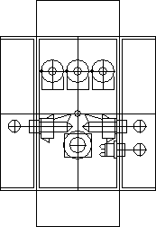
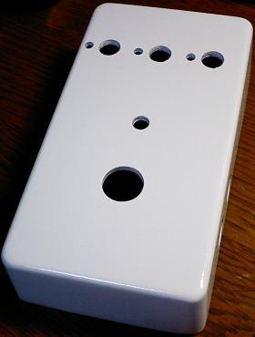
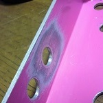
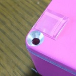

私のエフェクター自作方法【4】ケース
2008年11月26日 カテゴリー：私のエフェクター自作方法
ケースの穴あけと塗装をします。
[穴あけ]
私はJw_cadというフリーの製図ソフトを使って下図のようなものを描いています。

それをソフト上で印刷すれば正確な寸法で印刷してくれます。そして印刷したものをケースに貼り付けて穴位置を決めます。
いきなり太いドリルだとかなりズレるので、センターポンチ→2mmのピンバイス→3mmのドリルという風に使って浅く穴を開けておきます。まぁどんなに頑張っても0.5mmぐらいズレることがあります…
そして最終的に5mmのドリルで穴をあけます。もっと太いドリルがあればいいんですが、太いドリルは値段が高いしズレやすいので持っていません。
あけた穴にリーマーを突っ込んで穴をグリグリ広げるんですが、これがなかなか大変な作業です。フットスイッチ用の穴は直径12mmもあるので…（ステップドリルがあればかなり作業が楽になります。）
[塗装]
私は塗装の剥がれとかも味のひとつかなと思うので、あまり丁寧にはしていません。
1)表面を紙やすりで磨きます。私は#120の紙やすりで適当にやってます。
2)台所用洗剤を使って洗います。脂分がついていると塗料をはじくらしいです。
3)塗装します。ゆっくりやらないとすぐ塗料がタレてきます。私はいつも100円ショップのスプレー塗料です。
4)ある程度乾いたらオーブントースターで5分ぐらい焼きます。塗料によってはやりすぎるとこげて色が濃くなることがあります。自然乾燥でもよいと思います。
[完成]

ポットの回転防止の穴もあけています。
 
塗装済みケースの場合、大抵ケース内部や裏フタもしっかり塗装されています。インプットジャックを取り付ける部分や、裏フタのネジ穴一箇所の塗装を剥がし、ケースや裏フタがアースに繋がるようにしておきます。